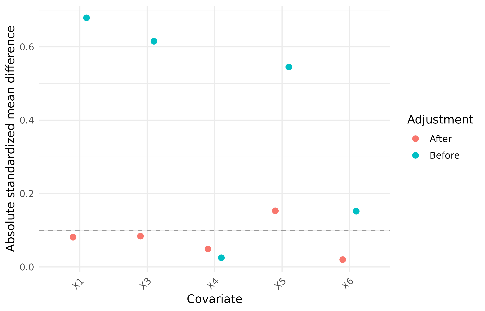
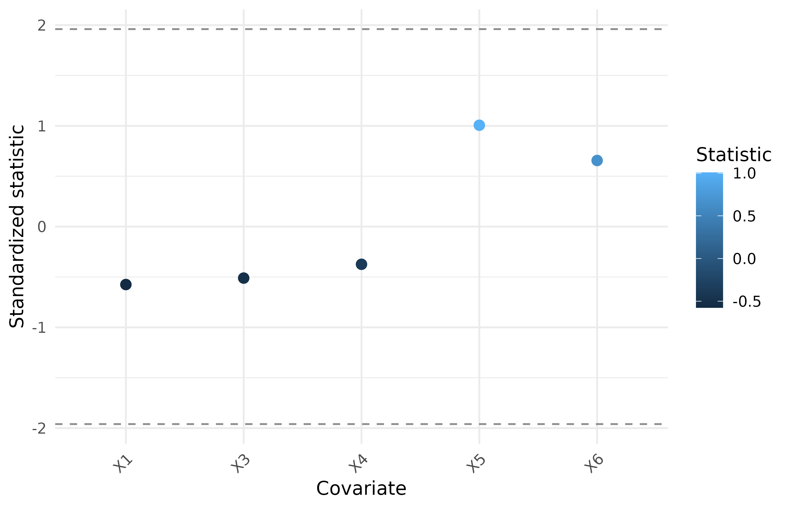
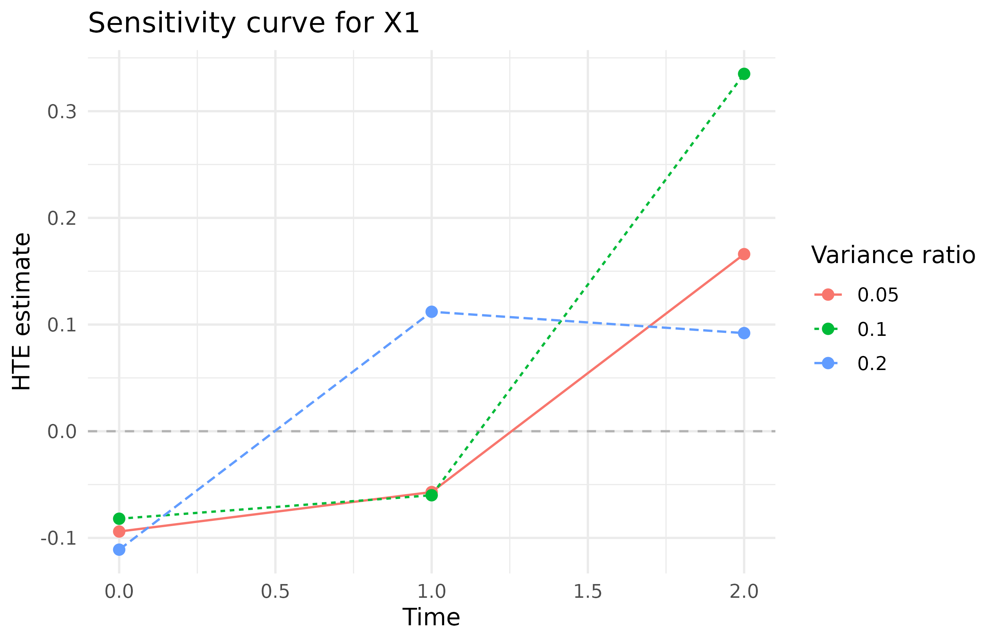
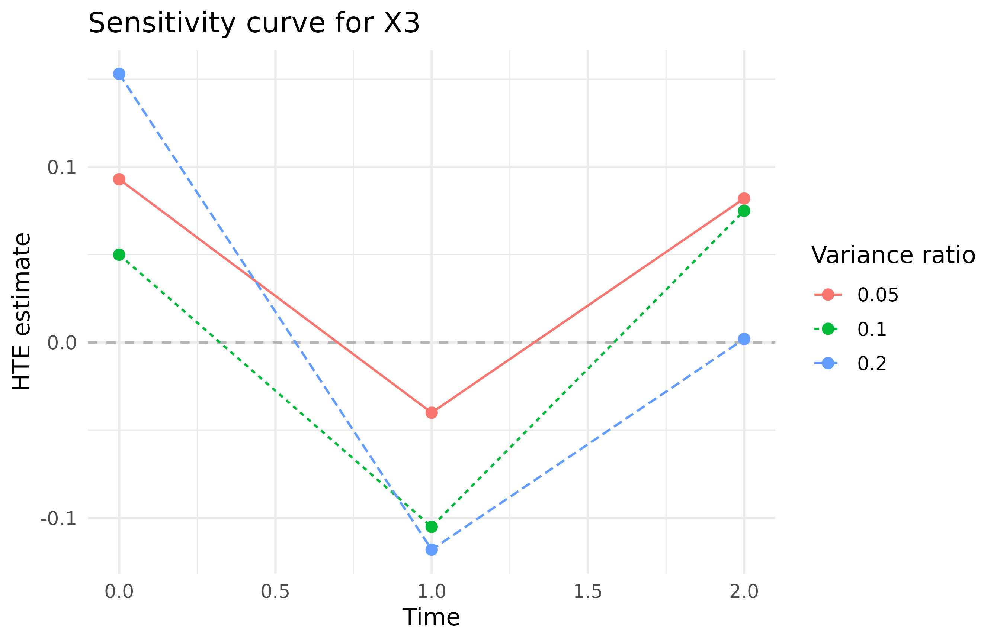
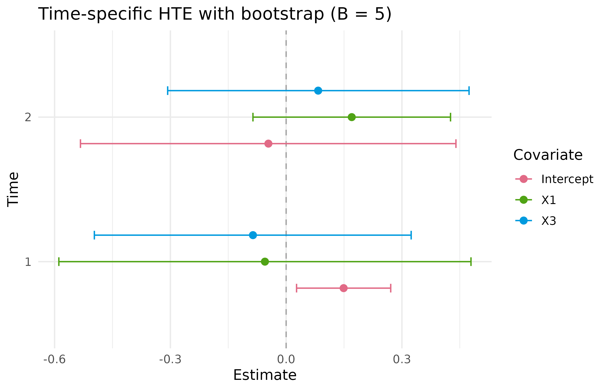
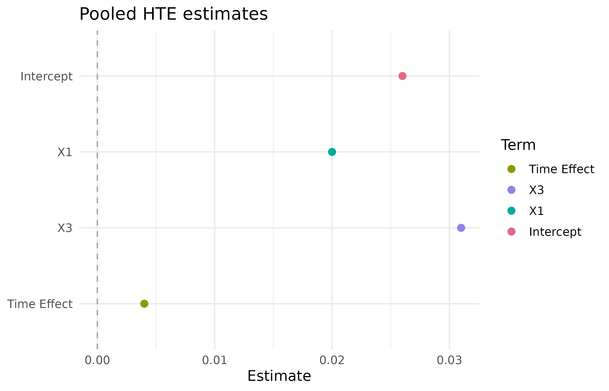

PDRobust
This is a replicating process for script.
data("BiSample") -> Mapping() -> DataCheck() -> DataStandard() -> prediction / diagnostic / analysis functions1. Load the built-in package data
library(PDRobust)
data("BiSample", package = "PDRobust")
head(BiSample)
#> id time Pi S1 S0 S A Y1 Y0 Y X1 X2 X3 X4 X5 X6
#> 1 1 0 0.987 1 1 1 1 0 1 0 1.479 -0.168 0.873 0 1 1
#> 2 1 1 0.987 1 1 1 1 0 0 0 1.479 -0.168 0.873 0 1 1
#> 3 1 2 0.987 1 1 1 1 0 0 0 1.479 -0.168 0.873 0 1 1
#> 4 2 0 0.777 1 1 1 1 0 0 0 0.267 0.350 -1.438 1 1 1
#> 5 2 1 0.777 1 1 1 1 0 0 0 0.267 0.350 -1.438 1 1 1
#> 6 2 2 0.777 1 1 1 1 0 0 0 0.267 0.350 -1.438 1 1 12. Define roles and analysis settings with
Mapping()
mapping <- Mapping(
id = "id",
time = "time",
treatment = "A",
survival = "S",
outcome = "Y",
baseline_time = 0,
cutoff_time = 2,
covariates = c("X1", "X3", "X4", "X5", "X6"),
interest_vars = c("X1", "X3"),
y_type = "B"
)
print(mapping)
#> PDRobust data mapping
#> ID: id
#> Time: time
#> Treatment: A
#> Survival: S
#> Outcome: Y
#> Baseline time: 0
#> Cutoff time: 2
#> Mapped covariates: X1, X3, X4, X5, X6
#> Interest variables: X1, X3
#> Outcome type: B (binary)3. Validate the raw data with DataCheck()
check <- DataCheck(BiSample, mapping, strict = FALSE)
names(check)
#> [1] "valid" "ready_for_analysis"
#> [3] "manual_resolution_required" "can_standardize"
#> [5] "checks" "settings"
#> [7] "diagnostics"
check$valid
#> [1] TRUE
check$ready_for_analysis
#> [1] TRUE
check$manual_resolution_required
#> [1] FALSE
check$can_standardize
#> [1] TRUEDetailed check report and diagnostics can be retained by using
check$diagnostics and check$check,
respectively.
4. Standardize the panel with DataStandard()
pd_data <- DataStandard(BiSample, mapping, drop =TRUE)
head(pd_data)
#> id time Pi S1 S0 S A Y1 Y0 Y X1 X2 X3 X4 X5 X6
#> 1 1 0 0.987 1 1 1 1 0 1 0 1.479 -0.168 0.873 0 1 1
#> 2 1 1 0.987 1 1 1 1 0 0 0 1.479 -0.168 0.873 0 1 1
#> 3 1 2 0.987 1 1 1 1 0 0 0 1.479 -0.168 0.873 0 1 1
#> 4 2 0 0.777 1 1 1 1 0 0 0 0.267 0.350 -1.438 1 1 1
#> 5 2 1 0.777 1 1 1 1 0 0 0 0.267 0.350 -1.438 1 1 1
#> 6 2 2 0.777 1 1 1 1 0 0 0 0.267 0.350 -1.438 1 1 1Imperfect dataset
For imperfect dataset, we have:
data("ImperfectConSample", package = "PDRobust")
head(ImperfectConSample)
#> patient_id visit_month alive_status treatment clinical_outcome X1 X2
#> 1 PT-0171 0 1 1 4.598 1.452 -2.075
#> 2 PT-0100 6 0 1 NA 1.473 -0.758
#> 3 PT-0056 0 1 0 8.806 -2.722 -0.735
#> 4 PT-0034 6 1 0 13.851 -1.471 0.278
#> 5 PT-0164 12 1 1 9.643 -1.272 -1.881
#> 6 PT-0058 0 1 1 10.341 -0.534 -0.842
#> X3 X4 X5 X6
#> 1 -0.147 0 1 1
#> 2 0.608 0 1 1
#> 3 0.424 1 1 0
#> 4 -0.158 0 0 0
#> 5 -3.333 0 1 0
#> 6 -0.092 0 1 0
con_mapping <- Mapping(
id = "patient_id",
time = "visit_month",
treatment = "treatment",
survival = "alive_status",
outcome = "clinical_outcome",
baseline_time = 0,
cutoff_time = 12,
covariates = c("X1", "X2", "X3", "X4", "X5", "X6"),
interest_vars = c("X1", "X2"),
y_type = "C"
)
con_data <- DataStandard(ImperfectConSample, con_mapping, drop = TRUE)
head(con_data)
#> patient_id visit_month alive_status treatment clinical_outcome X1 X2
#> 1 1 0 1 1 10.803 0.168 0.421
#> 2 1 1 1 1 12.006 0.168 0.421
#> 3 1 2 1 1 7.833 0.168 0.421
#> 4 2 0 1 0 4.101 -2.400 -0.324
#> 5 2 1 1 0 5.508 -2.400 -0.324
#> 6 2 2 0 0 NA -2.400 -0.324
#> X3 X4 X5 X6
#> 1 -0.557 1 1 1
#> 2 -0.557 1 1 1
#> 3 -0.557 1 1 1
#> 4 -0.391 0 0 0
#> 5 -0.391 0 0 0
#> 6 -0.391 0 0 05.1 Prediction functions and Diagnostics
ps_fo <- A ~ X1 + X3 + X4 + X5 + X6
prin_fo <- S ~ (X1 + X3 + X4 + X5 + X6 ) * A
out_fo <- Y ~ (X1 + X3 + X4 + X5 + X6) * A + SPropensity score model
ps <- PSPred(
ps_fo = ps_fo,
fit_dat = pd_data,
pred_dat = pd_data,
mapping = mapping
)
head(ps)
#> [1] 0.987 0.987 0.987 0.873 0.873 0.873
ps_diagnostic <- PSDiag(data = pd_data,
ps_fo = ps_fo)
print(ps_diagnostic)
#> Exposure-model balance diagnostics
#> covariate adjustment smd
#> X1 Before 0.679
#> X3 Before 0.615
#> X4 Before 0.025
#> X5 Before 0.545
#> X6 Before 0.152
#> X1 After 0.081
#> X3 After 0.084
#> X4 After 0.049
#> X5 After 0.153
#> X6 After 0.020
ps_diagnostic$plot
Principal score model
p0 <- PrinPred(
prin_fo = prin_fo,
fit_dat = pd_data,
pred_dat = pd_data,
a = 0,
mapping = mapping
)
head(p0)
#> [1] 1.000 0.985 0.971 1.000 0.990 0.979
principal_diagnostic <- PrinSDiag(
data = pd_data,
ps_fo = ps_fo,
prin_fo = prin_fo)
print(principal_diagnostic)
#> Principal-score diagnostics
#> covariate statistic
#> X1 -0.575
#> X3 -0.511
#> X4 -0.374
#> X5 1.006
#> X6 0.656
principal_diagnostic$plot
Outcome model
mu1 <- OutPred(
out_fo = out_fo,
fit_dat = pd_data,
pred_dat = pd_data,
a = 1,
mapping = mapping
)
head(mu1)
#> [1] 0.228 0.228 0.228 0.255 0.255 0.255
set.seed(12345)
sensitivity <- SA(
data = pd_data,
ps_fo = ps_fo,
prin_fo = prin_fo,
out_fo = out_fo,
ratiovec = c(0.05,0.1, 0.2)
)
print(sensitivity)
#> Sensitivity analysis
#> ratiovec time Intercept X1 X3
#> 0.05 0 -0.045 -0.094 0.093
#> 0.10 0 -0.098 -0.082 0.050
#> 0.20 0 -0.015 -0.111 0.153
#> 0.05 1 0.139 -0.057 -0.040
#> 0.10 1 0.235 -0.060 -0.105
#> 0.20 1 0.244 0.112 -0.118
#> Scenarios: 3
sensitivity$plot
#> $X1
#>
#> $X3
Principal-stratum profiling with QR()
principal_profile <- QR(
data = pd_data,
prin_fo = prin_fo,
quantile_level = c(0.25, 0.50, 0.75)
)
print(principal_profile)
#> Principal-stratum weighted means
#> X1 X3
#> 0.117 -0.136
#>
#> Weighted quantiles (NA for binary variables)
#> $X1
#> q0.25 q0.50 q0.75
#> -0.517 0.130 0.728
#>
#> $X3
#> q0.25 q0.50 q0.75
#> -0.766 -0.168 0.514
principal_profile$plot
#> NULL
5.2 Heterogeneous treatment effect
set.seed(12345)
separate_hte <- HTESepT(
data = pd_data,
ps_fo = ps_fo,
prin_fo = prin_fo,
out_fo = out_fo,
target_time = c(1, 2),
B = 5,
conf_level = 0.95,
max_attempts = NULL,
verbose = TRUE
)
separate_hte$summary
#> time covariate estimate SD LowerBound UpperBound
#> 1 1 Intercept 0.149 0.062 0.027 0.271
#> 2 1 X1 -0.055 0.272 -0.589 0.479
#> 3 1 X3 -0.086 0.209 -0.497 0.324
#> 4 2 Intercept -0.046 0.248 -0.533 0.440
#> 5 2 X1 0.170 0.131 -0.086 0.426
#> 6 2 X3 0.083 0.199 -0.307 0.474
separate_hte$forest_plot
head(separate_hte$boot_mat)
#> 1_Intercept 1_X1 1_X3 2_Intercept 2_X1 2_X3
#> boot1 0.15753353 0.2290715 -0.13673408 -0.24449491 0.11106612 -0.1794279
#> boot2 0.24092663 -0.1103065 0.37406426 -0.41292665 -0.00301342 -0.1142041
#> boot3 0.22982461 0.1537350 0.23565340 -0.49775542 -0.03054196 -0.1849731
#> boot4 0.13987791 -0.4202748 -0.05162735 -0.06794426 0.11749858 0.2599216
#> boot5 0.09411466 0.1793230 0.04375399 0.10963763 0.30037793 0.1173508
pooled_hte <- HTEAllT(
data = pd_data,
ps_fo = ps_fo,
prin_fo = prin_fo,
out_fo = out_fo,
B = 0,
verbose = FALSE
)
pooled_hte$summary
#> term estimate SD LowerBound UpperBound
#> 1 Intercept 0.026 NA NA NA
#> 2 X1 0.020 NA NA NA
#> 3 X3 0.031 NA NA NA
#> 4 Time Effect 0.004 NA NA NA
pooled_hte$forest_plot